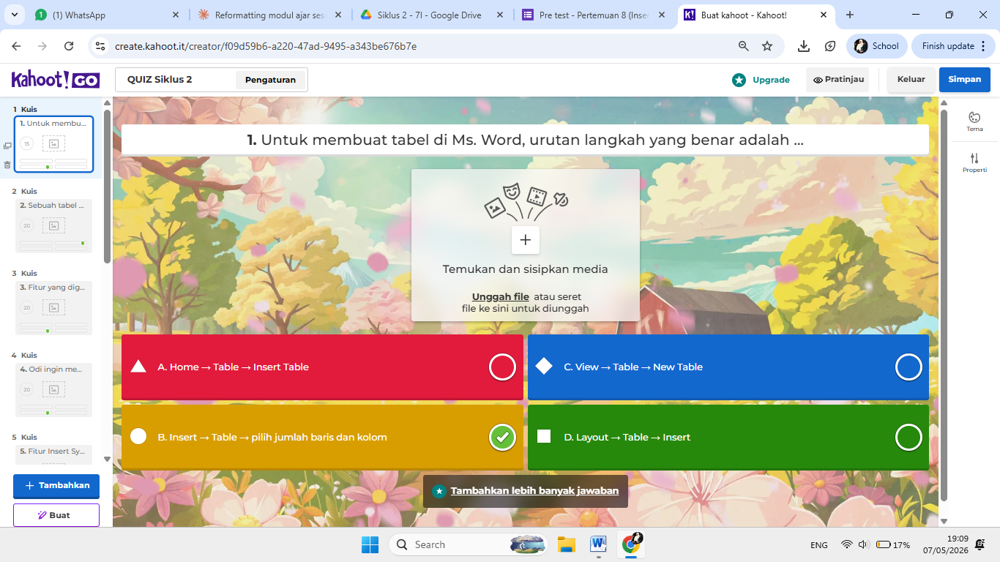
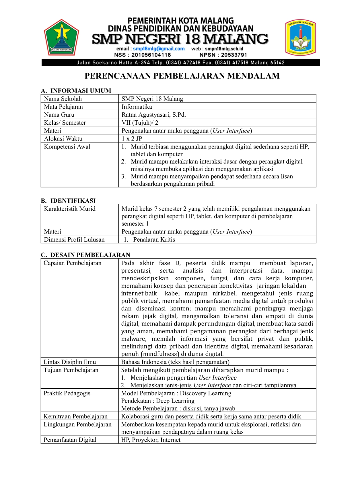
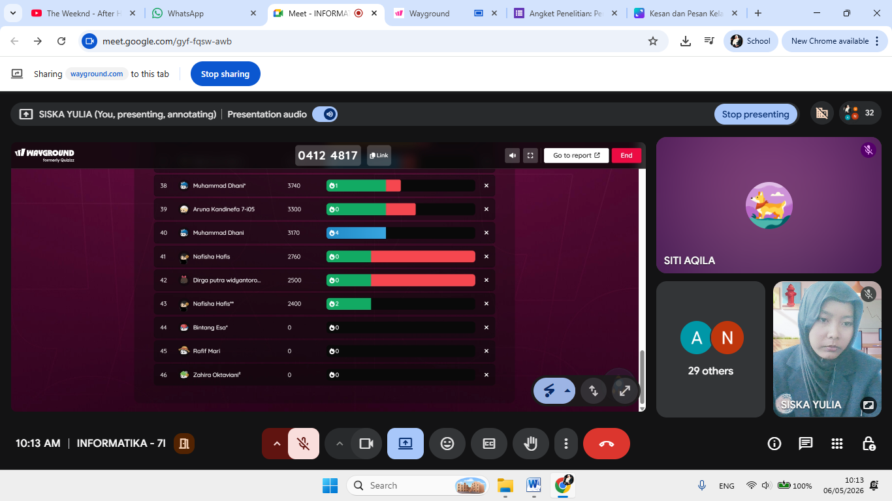

TOPIK 1
Topik 1
Dokumentasi pembelajaran dan artefak PPL pada Topik 1.
Lihat dokumentasi →📚 SEMESTER 1 • PPL TERBIMBING
Dokumentasi pelaksanaan Praktik Pengalaman Lapangan (PPL) Terbimbing selama Semester 1. Dokumentasi disusun dalam tiga siklus pembelajaran yang meliputi perangkat pembelajaran, hasil kerja, media pembelajaran, dan penilaian.
PENDAHULUAN PPL
PPL Terbimbing merupakan kegiatan praktik profesional yang memberi kesempatan untuk merancang, melaksanakan, mengamati, dan merefleksikan pembelajaran secara nyata. Dokumentasi ini memuat proses pembelajaran selama tiga siklus beserta perangkat, media, hasil kerja, dan evaluasi.
Mata kuliah Praktik Pengalaman Lapangan (PPL) Terbimbing merupakan mata kuliah praktik 6 SKS yang dirancang untuk melatih mahasiswa calon guru secara profesional melalui pengalaman langsung di mitra sekolah. Kegiatan meliputi orientasi, observasi manajemen sekolah dan lingkungan belajar, asistensi mengajar, serta praktik pembelajaran terbimbing. Melalui kolaborasi dengan guru pamong, dosen pembimbing lapangan, tenaga kependidikan, dan kepala sekolah, mahasiswa mengaplikasikan dan mengembangkan teori, metode, serta Pembelajaran Mendalam yang terintegrasi dengan mata kuliah lain seperti Pemahaman tentang Peserta Didik dan Pembelajaran, Asesmen dan Layanan BK, Praktikum Konseling Individu, dan PMA Dasar. Mata kuliah ini bertujuan mengembangkan kompetensi pedagogik dan profesional mahasiswa, kemampuan analisis, komunikasi, pemecahan masalah, refleksi, dan inovasi, serta membentuk guru yang berintegritas, kritis, reflektif, dan berorientasi pada kebutuhan murid.
TOPIK PPL TERBIMBING
Dokumentasi PPL disusun dalam lima topik pembelajaran dan tiga siklus pelaksanaan.
TOPIK 1
Dokumentasi pembelajaran dan artefak PPL pada Topik 1.
Lihat dokumentasi →TOPIK 2
Dokumentasi pembelajaran dan artefak PPL pada Topik 2.
Lihat dokumentasi →TOPIK 3
Dokumentasi pembelajaran dan artefak PPL pada Topik 3.
Lihat dokumentasi →TOPIK 4
Dokumentasi pembelajaran dan artefak PPL pada Topik 4.
Lihat dokumentasi →TOPIK 5
Dokumentasi pembelajaran dan artefak PPL pada Topik 5.
Lihat dokumentasi →SIKLUS PEMBELAJARAN
Dokumentasi pelaksanaan PPL Terbimbing pada Siklus 1.
Lihat Siklus 1 →Dokumentasi pelaksanaan PPL Terbimbing pada Siklus 2.
Lihat Siklus 2 →Dokumentasi pelaksanaan PPL Terbimbing pada Siklus 3.
Lihat Siklus 3 →DOKUMENTASI FOTO
Dokumentasi visual perangkat dan analisis pembelajaran selama pelaksanaan PPL Terbimbing.




